TacMap keeps everyone on the same map when you are off the grid. End-to-end encrypted presence, offline charts, and a two-minute setup. No server. No account.
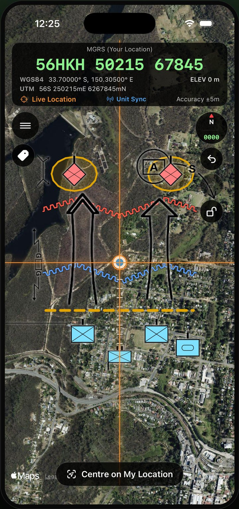
TAK is powerful and free, and it expects a server, a learning curve, and a platform choice. TacMap is the shared map you can hand to a whole team in two minutes.
| TacMap | Typical TAK setup | |
|---|---|---|
| Platforms | iOS and Android, one app | ATAK / iTAK / WinTAK, varying parity |
| Multi-user setup | Share a join code | Often a TAK Server to run and secure |
| Account | None | Depends on deployment |
| Presence encryption | End-to-end, relay sees ciphertext | Depends on server / config |
| Time to first shared map | Minutes | Setup and a real learning curve |
| Offline maps | Default | Supported, more setup |
| Auditable | Open source + published threat model | Open core |
TAK is the more powerful platform, and it is fair to say so. TacMap wins on time to first shared map, cross-platform parity, and a security story a non-specialist can verify for themselves.
MGRS grid, military symbology, measurement, and imported maps. TacMap makes zero tile requests until you explicitly turn on an online map.
See each other move in real time. Positions, callsigns, and markers are sealed on-device. The relay routes ciphertext and cannot read any of it.
No analytics, no ad SDKs, no crash telemetry. Crash logs are written to your device and shared only if you choose to.
Share a join code and you are synced. No account, no server to stand up. Run your own relay if you want to own the entire path.
The iPhone App Store set, exactly as it ships. Scroll sideways, or swipe on a phone.
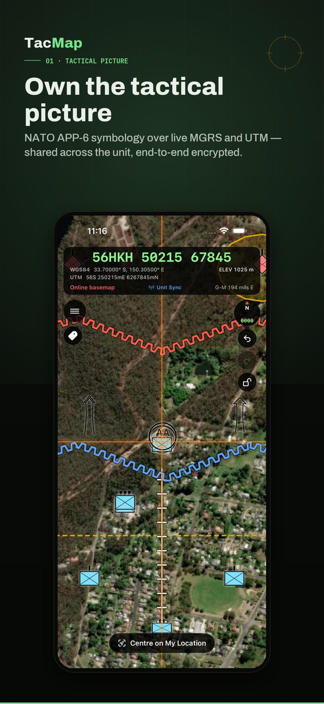
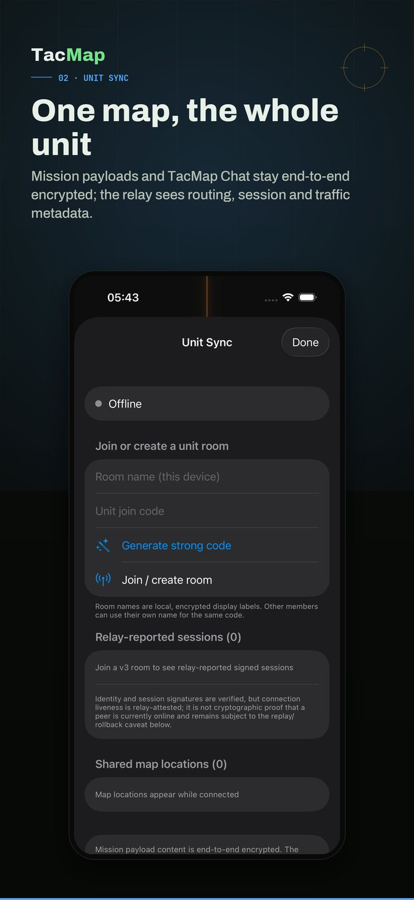
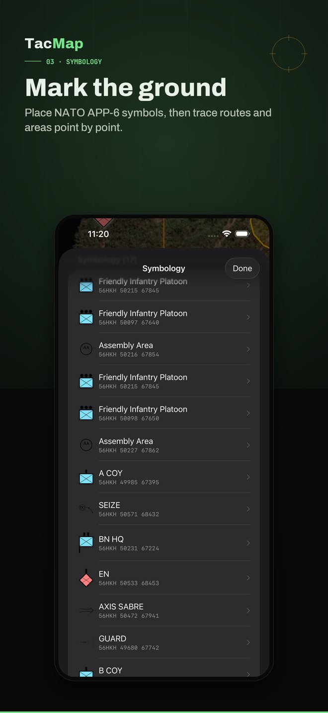
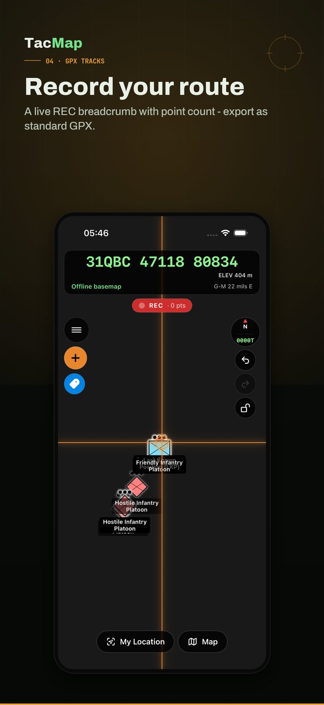
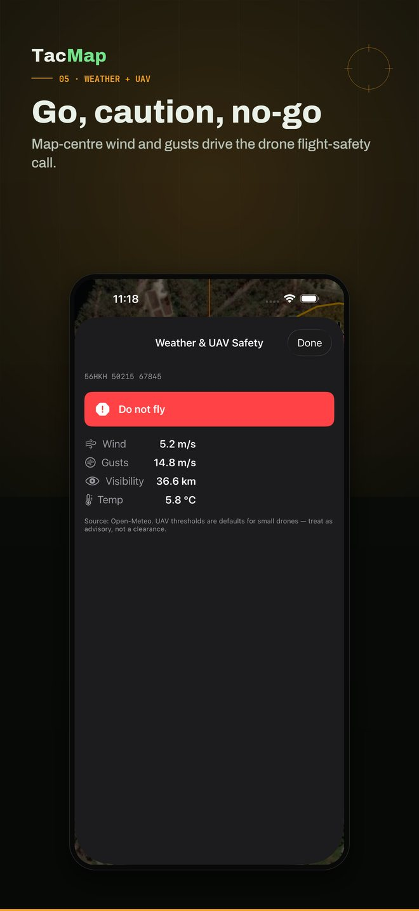
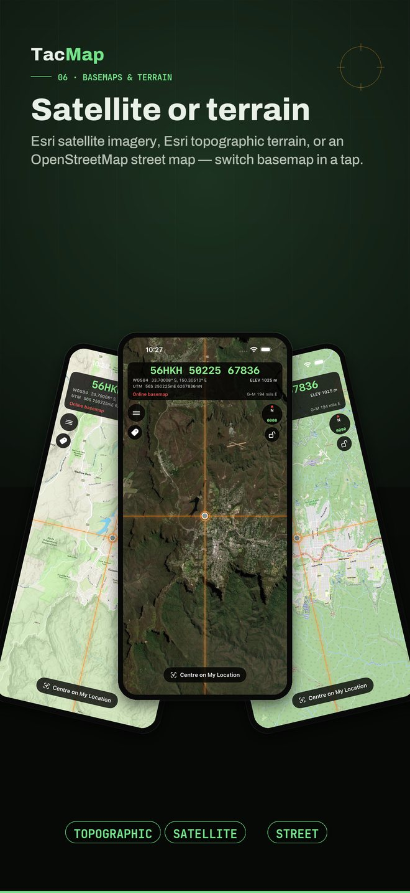
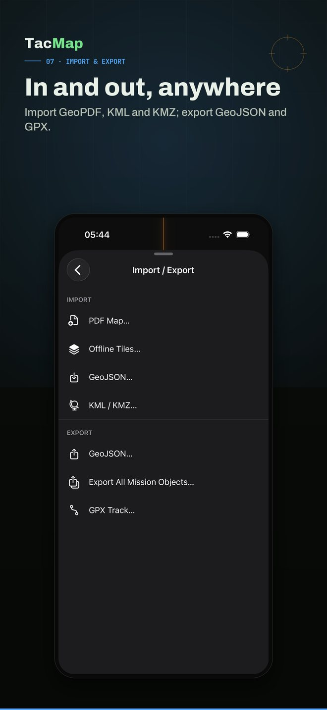
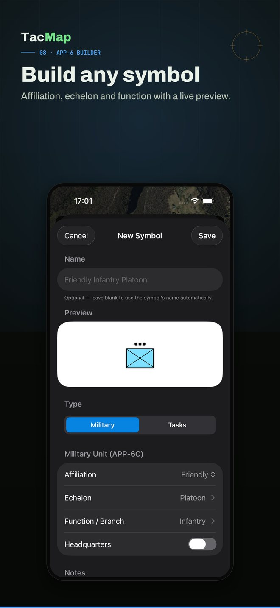
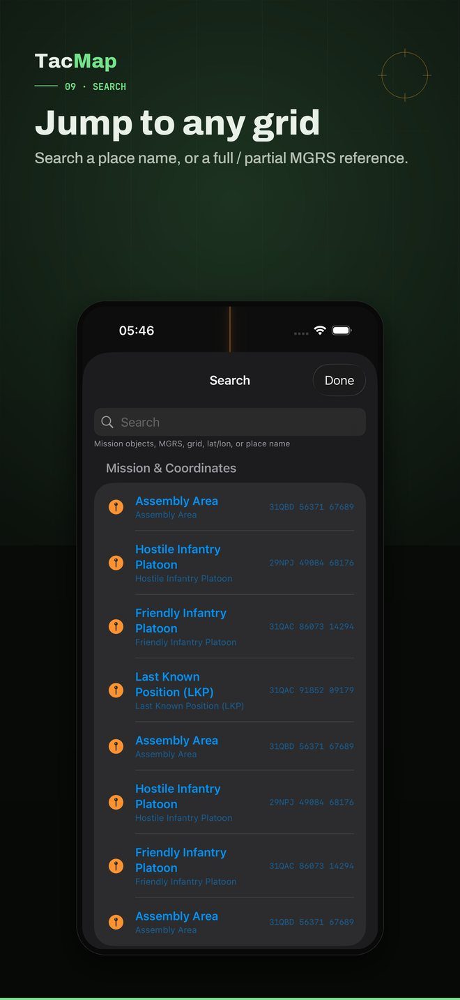
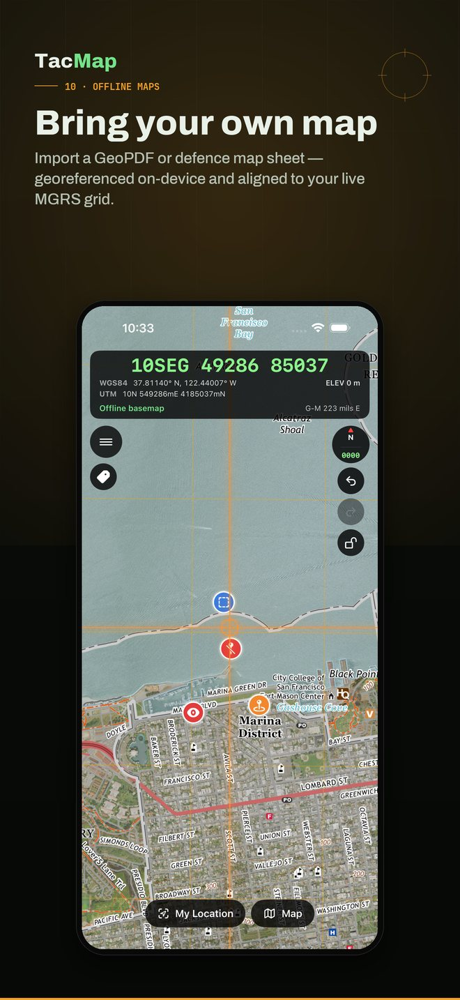
10 screens · iPhone
Run a real shared map for your whole element, fully offline.
Keep the team on one map in the valley where nothing else works.
Your map, your team, no account and nothing leaving your devices.
Shared situational awareness without standing up a server.
The whole security story is documented and open. The sync layer is end-to-end encrypted, the relay only ever handles sealed blobs and routing metadata, and the crypto ships with a test suite. If you can read code, you can check every claim on this page.
Download TacMap, share a join code, and you are moving as one. Offline, encrypted, no account.